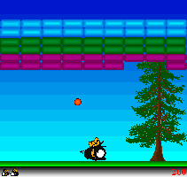
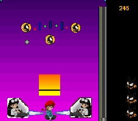

Windows Games
There aren't many anime-based Windows games out there except for
the hentai games (which usually aren't based on anime anyway). There is
one person who has created his own home-brew anime games. Check out the
Anime Game Arcade
by Chris Smith. You can find some pinball games there as well as some
classic games like Breakout with an anime twist. Below are two
sample screenshots. There is also a Sailor Moon Solitaire game available that uses pics of the
characters for the cards (no screen shot availble yet). Some tile games
of some anime characters have been made (no screen shot available yet) as
well.
Screen Shots from Anime Game Arcade


© 1997 - Luis A. Cruz